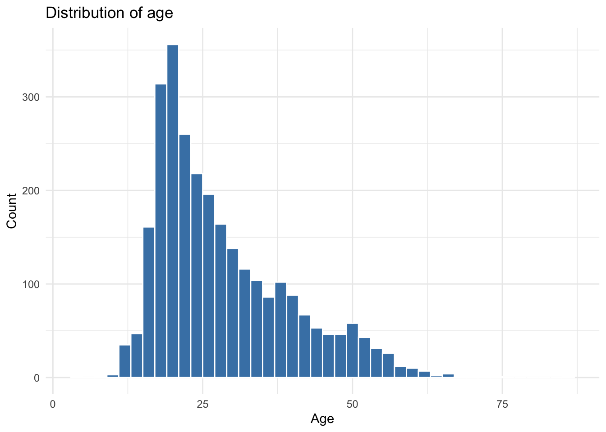
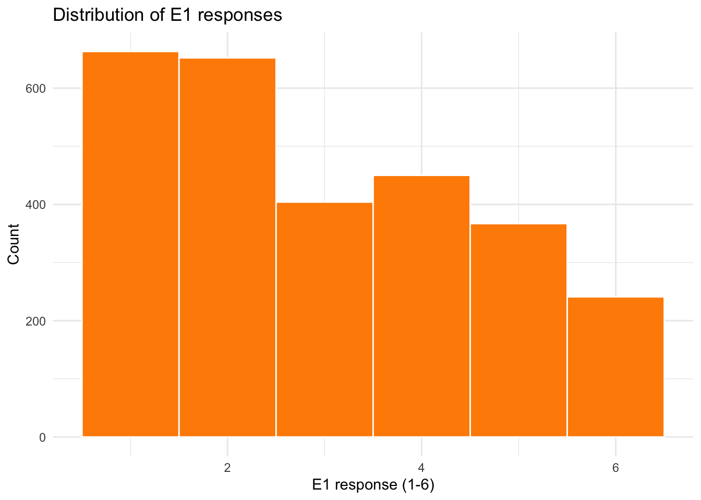
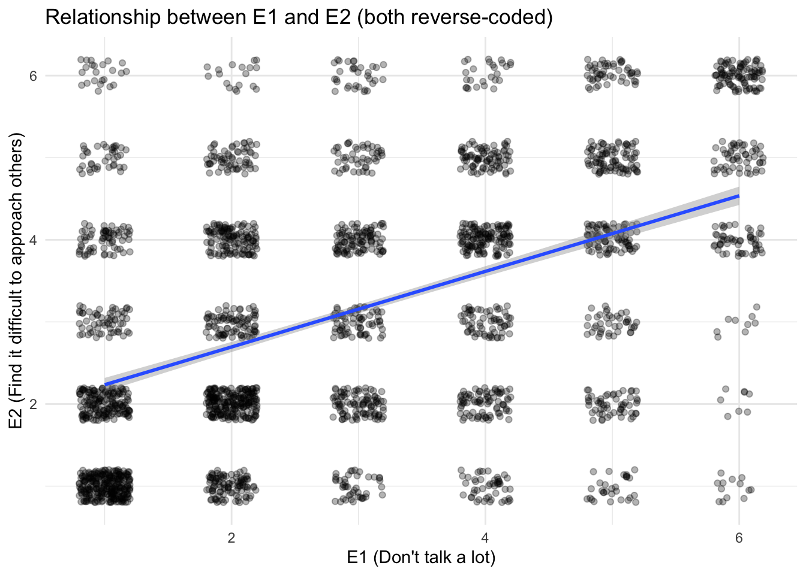
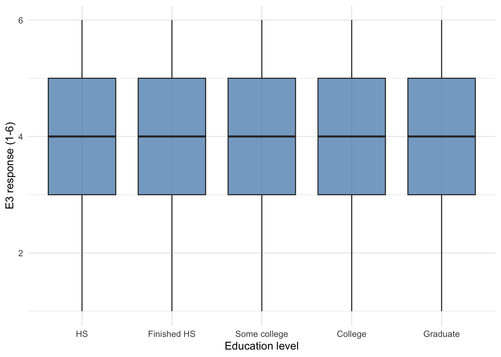
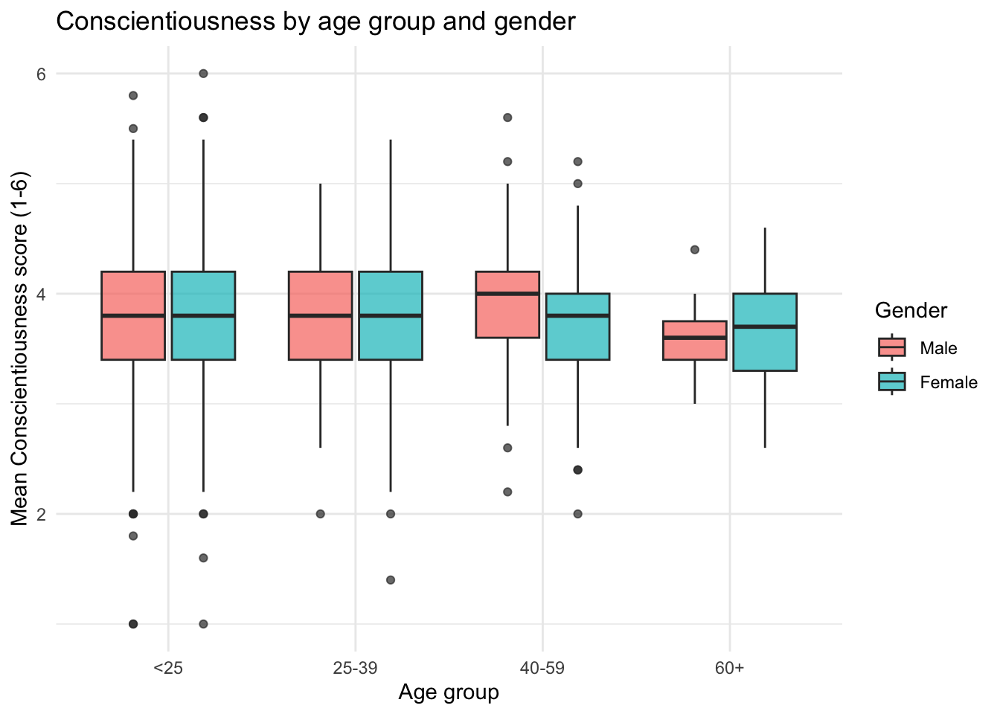

ggplot(bfi, aes(x = age)) +
geom_histogram(binwidth = 2, fill = "steelblue", color = "white") +
labs(title = "Distribution of age", x = "Age", y = "Count") +
theme_minimal()
Due by 11:59 PM on Sunday, May 10, 2026
Assigned: Monday, May 4 (Session 11) Due: Sunday, May 10 at 11:59 PM Submit: Quarto document (.qmd) AND rendered HTML on Canvas
See the guides: Setting Up an R Project | Using Quarto Documents
This assignment practices exploratory data analysis (EDA). You’ll explore distributions, identify outliers, investigate relationships, and generate questions from data. This is also good practice for your final project!
We’ll use the Big Five Inventory (BFI) dataset from the psych package:
This contains responses from 2,800 participants on 25 personality items (5 per Big Five trait: Agreeableness, Conscientiousness, Extraversion, Neuroticism, Openness), plus age and education.
Create histograms for age and at least one personality item. What do you notice about the distributions?


Age is right-skewed — most participants are young adults, with a long tail of older respondents. The E1 item uses a 1–6 scale and looks roughly bell-shaped. Any sensible observation about skew, central tendency, or floor/ceiling effects earns credit here.
Are there any outliers or unusual values in age? How would you identify them programmatically? (Hint: use filter() with reasonable bounds.)
# A tibble: 1 × 5
min_age max_age median n_under_15 n_over_80
<int> <int> <dbl> <int> <int>
1 3 86 26 61 1# A tibble: 7 × 2
age n
<int> <int>
1 3 1
2 9 1
3 11 3
4 12 28
5 13 7
6 14 21
7 86 1There’s no hard rule — “outlier” depends on what’s plausible for the study. Asking whether anyone is implausibly young (under 13, say, for an online personality survey) or implausibly old (over 90) is a reasonable starting point. The IQR rule (Q1 - 1.5*IQR to Q3 + 1.5*IQR) is another defensible approach.
How much missing data is there? Create a summary showing the percentage of NA values for each variable. (Hint: see the missing-data section of the Session 10 slides — the across() + mean(is.na(.)) pattern is what you want.)
# A tibble: 28 × 2
variable pct_missing
<chr> <dbl>
1 education 7.96
2 N4 1.29
3 N5 1.04
4 O3 1
5 A2 0.964
6 A3 0.929
7 C4 0.929
8 E3 0.893
9 C2 0.857
10 E1 0.821
# ℹ 18 more rowsacross(everything(), ...) applies the function to every column. Pivoting the result long makes it easy to sort — wide format with 28 columns of percentages is hard to scan. Education has the most missing data; the personality items each have a small fraction of skipped responses.
Pick two Extraversion items (e.g., E1 and E2). Compute the correlation between them and briefly interpret the result. Are the items positively or negatively related? Does the strength surprise you given that both are supposed to measure the same trait? (Some items may be reverse-coded!)
Hint: cor() doesn’t know how to handle missing values by default — if any participant skipped either item, you’ll get NA. Pass use = "complete.obs" to tell it to compute the correlation using only participants who answered both items.
The correlation is positive and moderate-to-strong — somewhere around .3 to .5 depending on how missingness is handled. That’s actually informative: in the BFI, items E1 (“Don’t talk a lot”) and E2 (“Find it difficult to approach others”) are reverse-coded, while E3, E4, and E5 are coded in the extraverted direction. Two reverse-coded items should correlate positively with each other and negatively with the forward-coded items. If you found a negative correlation between E1 and one of E3–E5, that’s the reverse-coding showing up in the raw data.
Make a scatterplot of those same two items with a trend line. Does the visual relationship match what the correlation in Task 2.1 suggested?

geom_point() here would show only ~36 distinct dots because both variables are integer 1–6 — geom_jitter() spreads the points enough to see the density. The upward trend matches the positive correlation from Task 2.1.
Pick one Extraversion item. Create boxplots showing how it differs by education level. Do you see a difference?
Hint: education is stored as numeric codes (1–5), so ggplot will treat it as continuous and give you one squashed boxplot. See the factor section of the Session 10 slides for how to convert it to a labeled factor first.
bfi |>
filter(!is.na(education)) |>
mutate(education = factor(education,
levels = 1:5,
labels = c("HS", "Finished HS", "Some college",
"College", "Graduate"))) |>
ggplot(aes(x = education, y = E3)) +
geom_boxplot(fill = "steelblue", alpha = 0.7) +
labs(
x = "Education level",
y = "E3 response (1-6)"
) +
theme_minimal()
Differences across education groups are small here — the medians and IQRs largely overlap. That’s a perfectly valid finding to report. Filtering out NA education values keeps ggplot from drawing an extra “NA” box.
Based on your exploration, generate 3 interesting questions that could be investigated with this data. Write them as comments.
There’s no single right answer. Strong questions are specific (name the variables), answerable with this data, and non-trivial (you couldn’t just look it up in the codebook). Examples:
# 1. Does the strength of within-trait item correlations differ by gender?
# (e.g., are the Extraversion items more internally consistent for women than men?)
#
# 2. Is age associated with higher Conscientiousness scores, controlling for education?
# (The folk wisdom is that people get more conscientious with age — does the data agree?)
#
# 3. Which Big Five trait shows the largest gender difference in this sample,
# and is that difference uniform across age groups?Weak questions to flag: anything answerable by reading a single variable’s mean (“what’s the average age?”), or anything not addressable with this data (“does therapy reduce neuroticism?” — no treatment variable).
For one of your questions, create a visualization that helps answer it. Explain your findings in a comment.
Taking the third sample question — gender differences in trait means across age groups — one approach is to compute a composite Conscientiousness score and plot it by gender across age bins. Many other approaches are equally valid.
bfi |>
filter(!is.na(age), !is.na(gender)) |>
mutate(
# The C4 and C5 items are reverse-coded in the BFI
C_score = rowMeans(across(c(C1, C2, C3, C4, C5), ~ .x), na.rm = TRUE),
age_group = cut(age, breaks = c(0, 25, 40, 60, 100),
labels = c("<25", "25-39", "40-59", "60+")),
gender = factor(gender, levels = 1:2, labels = c("Male", "Female"))
) |>
ggplot(aes(x = age_group, y = C_score, fill = gender)) +
geom_boxplot(alpha = 0.7) +
labs(
title = "Conscientiousness by age group and gender",
x = "Age group",
y = "Mean Conscientiousness score (1-6)",
fill = "Gender"
) +
theme_minimal()
The pattern is consistent with the broader personality literature: a small but visible increase in Conscientiousness with age, similar across genders. Note that the raw C score here ignores the fact that C4 and C5 are reverse-coded — a real analysis would reverse-code those items first.
Write a 1-page (approximately 300-400 words) EDA report summarizing:
Write this as narrative text (not code comments) in your Quarto document.
Reports are graded for whether each of the four sections is present, specific, and accurate — not against a single model answer. A strong write-up looks like:
The data. This analysis uses the Big Five Inventory (BFI) dataset from the
psychpackage, containing 2,800 participants’ responses to 25 personality items (five each for Agreeableness, Conscientiousness, Extraversion, Neuroticism, and Openness) along with age, gender, and education.Key findings. First, the personality items are positively correlated within each trait, consistent with the BFI’s construct validity — though some items are reverse-coded, so raw correlations between forward- and reverse-coded items appear negative until the reverse-coding is applied. Second, Conscientiousness shows a modest positive association with age, in line with prior personality research. Third, education differences in Extraversion items are small and largely overlap across levels.
Data quality issues. Missing data are concentrated in education (~5%) and a handful of personality items (~1-2% each). The age distribution is right-skewed with a few implausibly young or old respondents that would warrant a closer look before any formal analysis. Reverse-coding for items E1, E2, C4, C5, O2, O5, and N5 has not been applied and would need to be addressed before constructing composite trait scores.
Next steps. I would (1) apply the published BFI reverse-coding key and construct trait composites, (2) examine the internal consistency (Cronbach’s alpha) of each trait, and (3) test whether age-by-trait associations remain after controlling for gender and education. Beyond that, a measurement-invariance test would help establish whether trait means can be meaningfully compared across demographic groups.
Look for: dataset described accurately, at least two findings tied to specific variables, missing-data discussion that goes beyond “there’s some missingness,” and next steps that follow logically from the findings rather than being generic (“run a regression”).
| Task | Points |
|---|---|
| 1.1: Histograms for age and personality item | 8 |
| 1.2: Outlier detection in age | 8 |
| 1.3: Missing data summary | 9 |
| 2.1: Correlation between two Extraversion items + interpretation | 10 |
| 2.2: Scatterplot of those two items with trend line | 10 |
| 2.3: Boxplots by education level | 10 |
| 3.1: Generate 3 research questions | 8 |
| 3.2: Visualization + interpretation for one question | 12 |
| Part 4: EDA report (300–400 words) | 15 |
| QMD file knits without errors | 10 |
| Total | 100 |
Grading scale per task: Full points = correct. Full - 1 = one minor error (typo, small formatting issue). Half credit = one major error. 0 = not attempted or multiple major errors. “QMD file knits” refers to whether the Quarto document renders successfully, not whether individual code produces correct output.
Submit:
Students enrolled in PSY 510 must complete the following extension in place of the 1-page EDA report in Part 4.
Instead of the 1-page EDA summary, write your findings as if they were the preliminary analysis section of a manuscript — combining your code output and interpretations in a form that would make sense to a reader of a journal article.
Your write-up should include the following, in order:
Dataset description (2–3 sentences): What are the data? How many participants? What variables? How was it collected?
Data quality and exclusions (1–2 sentences): Were any observations flagged or removed? What did you do about missing data? Write this as you would in a Methods section — specific and justified.
Descriptive statistics: Report means, SDs, and ranges for at least 5 key variables. Format these as a table using knitr::kable() in a Quarto document, or present them clearly in prose if submitting a plain PDF.
Key patterns (1–2 paragraphs): Describe 2–3 findings from your EDA, referring to your figures by number (Figure 1 shows…). Write this as you would in a Results section — precise, direct, no over-interpretation.
Analysis plan (1 paragraph): Based on what you found, what would you examine next in a formal analysis? Why does the EDA support that direction?
Length: 500–700 words. This should read as a coherent piece of writing, not a list of answers.
Submission: Include your write-up as narrative text in your .qmd file under a clearly marked ## Graduate Extension section.